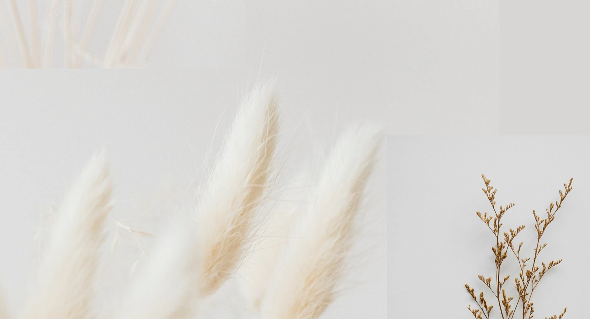
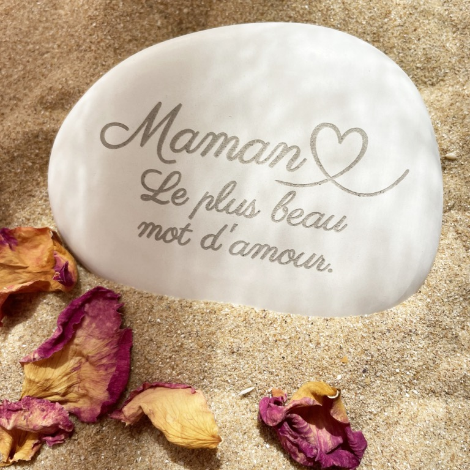
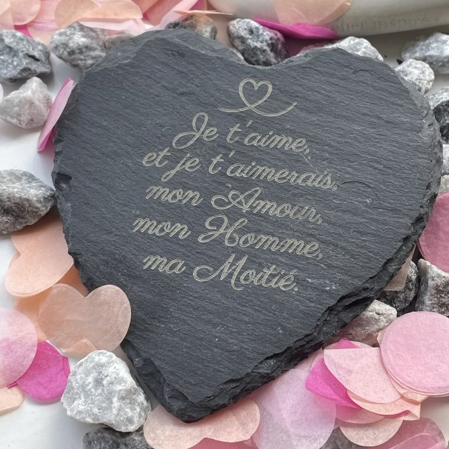
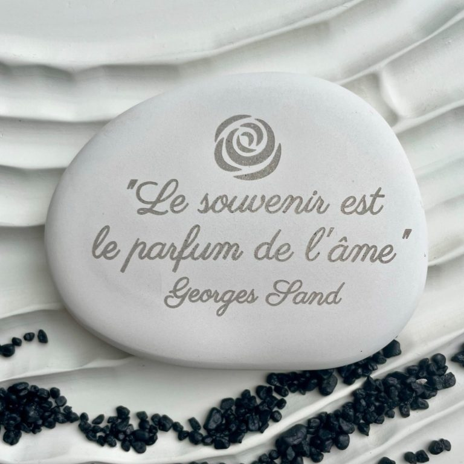
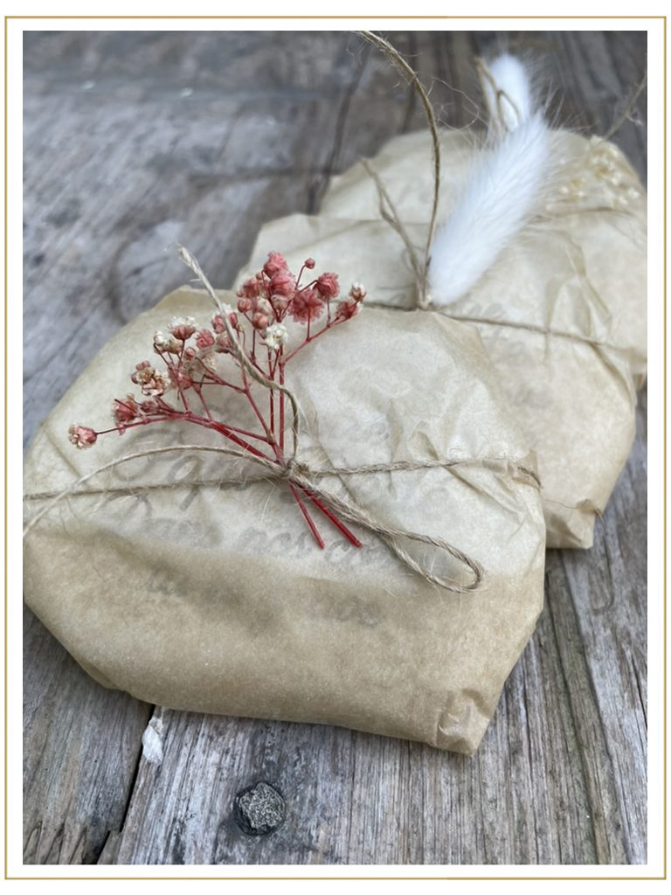

Honorer dignement ses proches
Des galets funéraires pour trouver un peu de réconfort
dans un objet symbolique — doux, rond, et apaisant…
C'est avec amour et un soin particulier que nous avons conçu une gamme experte d'articles funéraires plus modernes pour vous aider à traverser cette étape de vie si difficile, et ainsi faire le deuil d'un être cher… Un peu d'émotion, de poésie et de réconfort à travers un objet symbolique — doux, rond, et apaisant…
Livraison rapide
5 à 7 jours, ou moins sur demande spéciale.
Gravure personnalisée
Avec texte et motif de votre choix.
La collection
Un large choix d'articles funéraires modernes et personnalisés
Découvrez notre collection d'articles funéraires alliant authenticité et modernité.
- 01Galets pierre reconstituée
- 02Gamme minérale en pierre naturelle (plus durable)
- 03Ardoises gravées
- 04Pierres de basalte
- 05Travertin

Un dernier cadeau
Faire le deuil tout en créant un souvenir précieux
Offrir un objet commémoratif, c'est aussi l'occasion de faire un dernier cadeau personnalisé et d'apaiser ainsi un chagrin…
Un simple objet, une simple phrase peut raviver les souvenirs d'une personne disparue, faisant de chaque anecdote une célébration de leur vie et ainsi nous ramener à des moments partagés.
Commandez maintenantNotre petite sélection…
Une gamme d'articles funéraires plus moderne
Conçue et personnalisée avec soin en Rhône-Alpes. Vous pouvez les déposer en extérieur pour rendre un bel hommage…
Des galets pour toutes les occasions…
Laissez s'exprimer la créativité qui est en vous




Fabrication française et artisanale
La passion derrière chaque détail
Recevoir un paquet personnalisé, c'est le sentiment que quelqu'un s'est investi pour vous offrir quelque chose de véritablement unique et spécial.
Nous apportons un soin particulier à toutes les étapes — de la création à la fabrication et au conditionnement. Fabrication française (Rhône-Alpes) et artisanale.
Commandez maintenantIls nous ont fait confiance
J'ai commandé une plaque travertin et un galet. Je souhaitais trouver quelque chose de différent et personnalisé. Laetitia est de très bon conseil notamment pour la tenue dans le temps et les intempéries. J'ai pu personnaliser comme je souhaitais grâce au travail de Laetitia. Le résultat est magnifique. C'est beaucoup d'émotion et mettre un peu de notre âme dans un objet souvenir. J'avais peur de la livraison mais le colis est très bien fait, tout est parfaitement emballé et le colis a été mis dans ma boîte aux lettres. Merci à l'atelier inspiré. Je ne peux que recommander.
Mélanie ROLLANDil y a 2 mois · Avis GoogleJe cherchais un article funéraire plus moderne et différent de ce qu'on trouve dans le commerce. Je suis tombé sur le site l'atelier inspiré. J'ai commandé un travertin. Le résultat est juste magnifique. Merci pour ces belles créations funéraires et surtout personnalisées en France !
Cédric MAISONil y a 2 mois · Avis GoogleNous avons commandé un galet funéraire pour mettre au jardin du souvenir lors du décès de mon beau-père et je recommande sans hésiter le travail réalisé avec soin par Laetitia Gomot qui a répondu à notre attente. Le suivi de notre commande a été réactif et la livraison rapide dans un emballage soigné. Merci infiniment pour votre travail.
Isabelle Langlaisil y a 10 mois · Avis GoogleMerci pour ce magnifique galet qui sublimera la pierre tombale de ma mère.
Milou Pilou!il y a un an · Avis Google
Merci pour ce magnifique galet qui sublimera la pierre tombale de ma mère.
Milou Pilou!il y a un an · Avis GoogleJe cherchais des cadeaux personnalisables pour mes parents, à l'occasion de mon mariage. Je suis tombée sur ces mouchoirs en tissu avec broderie personnalisable, une idée qui a pu faire son petit effet ! L'envoi était rapide et livré avec une petite pochette cadeau adorable. Je recommande !
Pauline M.il y a un an · Avis GoogleMerci beaucoup, très beau produit, original, belle présentation et emballage soigné, livraison rapide !
SO RND91il y a un an · Avis GoogleTrès très joli, merci beaucoup.
Alice Vincentil y a un an · Avis GoogleJ'ai commandé une plaque travertin et un galet. Je souhaitais trouver quelque chose de différent et personnalisé. Laetitia est de très bon conseil notamment pour la tenue dans le temps et les intempéries. J'ai pu personnaliser comme je souhaitais grâce au travail de Laetitia. Le résultat est magnifique. C'est beaucoup d'émotion et mettre un peu de notre âme dans un objet souvenir. J'avais peur de la livraison mais le colis est très bien fait, tout est parfaitement emballé et le colis a été mis dans ma boîte aux lettres. Merci à l'atelier inspiré. Je ne peux que recommander.
Mélanie ROLLANDil y a 2 mois · Avis Google